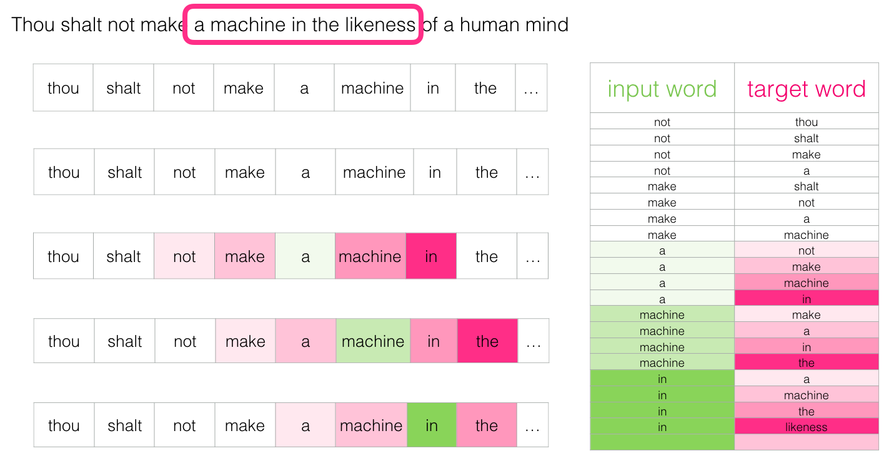

Word2vec
Contents
Word2vec¶
How it works¶
Imagine I have two sentences:
“Formula One driver Lewis Hamilton is a seven time world champion”.
“Ferrari driver Sebastian Vettel fails to qualify for the fifth Grand Prix in a row”
Say I want find words that are semantically related to Lewis.
In word2vec we can use two different algorithms, continuous bag of words (CBOW) and skip-gram negative sampling.

Continuous bag of words (CBOW)¶
We take a window of n words surrounding “Lewis” and use those words as input into a neural network, using the logic that if certains words appear together often, then they’re most likely semantically related. We take these surrounding words and plug them into a neural network to train weights which predict “Lewis”.
We plug in a one hot vector for each word in the window and train the hidden layer to output probabilities of the current word (“Lewis”). Therefore the order of the words do not matter, just what the words are.

Skip Gram Negative Sampling¶
Whereas, in the second option of using the continuous skip-gram architecture; the model uses the current word to predict the surrounding window of context words. The skip-gram architecture weighs nearby context words more heavily than more distant context words. The output probabilities are going to relate to how likely it is to find each vocabulary word near our input word. For example, if you gave the trained network the input word “Europe”, the output probabilities are going to be much higher for words like “Belgium” and “Continent” than for unrelated words like “fruits” and “cats”.
import os
import json
import pandas as pd
import numpy as np
import sys
sys.path.insert(0, '..')
import std_func
df = pd.read_csv("../data/preprocessed.csv")
[nltk_data] Downloading package stopwords to /home/runner/nltk_data...
[nltk_data] Package stopwords is already up-to-date!
[nltk_data] Downloading package wordnet to /home/runner/nltk_data...
[nltk_data] Package wordnet is already up-to-date!
[nltk_data] Downloading package punkt to /home/runner/nltk_data...
[nltk_data] Package punkt is already up-to-date!
Here we split each document by word to create a word vector
from gensim.models.word2vec import Word2Vec
from gensim import utils
revs_processed = df["coDescription_stopwords"].apply(lambda x: utils.simple_preprocess(x))
revs_processed.head()
0 [mongodb, leading, modern, general, purpose, d...
1 [salesforce, global, leader, customer, relatio...
2 [splunk, provides, innovative, software, solut...
3 [okta, leading, independent, provider, identit...
4 [veeva, leading, provider, industry, cloud, so...
Name: coDescription_stopwords, dtype: object
Now lets build the Word2Vec model
model_w = Word2Vec(revs_processed, vector_size=200)
We can examine words and see which words are most similar. Below are the most similar words to cloud, trial, and oil.
model_w.wv.most_similar(positive =['cloud'], topn = 5)
[('oracle', 0.8269278407096863),
('computing', 0.8263163566589355),
('saas', 0.8240344524383545),
('architecture', 0.8182879090309143),
('bridgeline', 0.7994004487991333)]
model_w.wv.most_similar(positive =['trial'], topn = 5)
[('study', 0.7949320077896118),
('clinicaltrial', 0.7224904894828796),
('clinicaltrials', 0.6950622797012329),
('trialin', 0.6841835975646973),
('epidemiology', 0.6143243312835693)]
model_w.wv.most_similar(positive =['oil'], topn = 5)
[('natural', 0.6369991898536682),
('oiland', 0.6357731223106384),
('flared', 0.5929497480392456),
('greenhouse', 0.5524455308914185),
('extractive', 0.5384180545806885)]
Now we’ll map these word vectors back to each document, by averaging all the word vectors that belong to words in a given document (filing)
def doc_to_vec(text):
word_vecs = [model_w.wv[w] for w in text if w in model_w.wv]
if len(word_vecs) == 0:
return np.zeros(model_w.vector_size)
return np.mean(word_vecs, axis = 0)
doc_vec = pd.DataFrame(revs_processed.apply(doc_to_vec).tolist())
labels = np.asarray(model_w.wv.index_to_key)
If you’re interested, the entire 200 dimensions of each document is below:
doc_vec
| 0 | 1 | 2 | 3 | 4 | 5 | 6 | 7 | 8 | 9 | ... | 190 | 191 | 192 | 193 | 194 | 195 | 196 | 197 | 198 | 199 | |
|---|---|---|---|---|---|---|---|---|---|---|---|---|---|---|---|---|---|---|---|---|---|
| 0 | -0.203863 | 0.100017 | 0.062182 | -0.370652 | 0.056183 | 0.289059 | -0.015918 | -0.373590 | 0.151867 | -0.286038 | ... | -0.229405 | 0.296335 | -0.223592 | 0.030374 | -0.153371 | -0.392465 | -0.447015 | -0.123075 | 0.147149 | 0.231398 |
| 1 | -0.213958 | 0.123220 | 0.069246 | -0.452715 | 0.111098 | 0.255628 | -0.037418 | -0.445962 | 0.204180 | -0.398585 | ... | -0.227138 | 0.250072 | -0.236145 | -0.023109 | -0.142476 | -0.511754 | -0.578225 | -0.170153 | 0.161328 | 0.227213 |
| 2 | -0.166005 | 0.009600 | 0.017769 | -0.433244 | 0.070805 | 0.201071 | -0.017237 | -0.372372 | 0.310344 | -0.387069 | ... | -0.251768 | 0.340368 | -0.222572 | 0.000240 | -0.259302 | -0.380519 | -0.498129 | -0.067427 | 0.167021 | 0.236450 |
| 3 | -0.198107 | 0.118901 | 0.047911 | -0.392895 | 0.213496 | 0.326317 | -0.082257 | -0.350305 | 0.247171 | -0.308338 | ... | -0.286900 | 0.177460 | -0.284156 | 0.082276 | -0.275597 | -0.406984 | -0.601175 | -0.085623 | 0.092425 | 0.370824 |
| 4 | 0.030904 | -0.178390 | -0.180102 | -0.216529 | 0.135455 | 0.104275 | -0.296451 | -0.156112 | 0.097552 | -0.554341 | ... | -0.122174 | 0.171301 | 0.011435 | -0.020159 | -0.132368 | -0.349097 | -0.511134 | -0.428308 | 0.056684 | 0.213081 |
| ... | ... | ... | ... | ... | ... | ... | ... | ... | ... | ... | ... | ... | ... | ... | ... | ... | ... | ... | ... | ... | ... |
| 670 | 0.222735 | 0.035988 | -0.138507 | -0.170858 | 0.313602 | 0.230283 | -0.217372 | -0.092013 | -0.128170 | -0.748275 | ... | -0.171204 | 0.251861 | 0.086379 | 0.189000 | -0.022669 | -0.515186 | -0.441608 | -0.551700 | 0.346393 | 0.101502 |
| 671 | -0.217870 | -0.058613 | 0.050006 | 0.315110 | 0.052688 | -0.065171 | -0.024299 | -0.028142 | -0.137399 | 0.237169 | ... | -0.015379 | -0.003328 | -0.457322 | -0.087914 | -0.024686 | 0.048939 | 0.078790 | -0.113304 | 0.265062 | -0.000772 |
| 672 | 0.189291 | -0.388747 | -0.361224 | -0.230081 | 0.119838 | -0.057915 | -0.422601 | 0.091527 | -0.000105 | -0.505770 | ... | -0.203912 | 0.284266 | -0.001648 | 0.167666 | -0.143803 | -0.317566 | -0.385166 | -0.516344 | 0.026333 | 0.194448 |
| 673 | 0.005860 | -0.016226 | -0.107497 | -0.089952 | 0.313727 | 0.005125 | -0.130912 | -0.088950 | -0.106136 | -0.626224 | ... | -0.147226 | 0.173705 | 0.114422 | -0.035778 | -0.051105 | -0.379917 | -0.456776 | -0.454873 | 0.305173 | 0.174241 |
| 674 | -0.134344 | 0.083627 | 0.201292 | -0.507626 | -0.007925 | 0.170690 | 0.020538 | -0.457812 | 0.287404 | -0.496309 | ... | -0.259984 | 0.302623 | -0.131235 | -0.127030 | -0.150432 | -0.394392 | -0.440480 | -0.047661 | 0.003281 | 0.173090 |
675 rows × 200 columns
plot_pca = std_func.visualize_pca(doc_vec, df.loc[:,["name","SIC_desc"]])
---------------------------------------------------------------------------
AttributeError Traceback (most recent call last)
Input In [9], in <cell line: 1>()
----> 1 plot_pca = std_func.visualize_pca(doc_vec, df.loc[:,["name","SIC_desc"]])
AttributeError: module 'std_func' has no attribute 'visualize_pca'
std_func.pca_visualize_3d(plot_pca)
---------------------------------------------------------------------------
NameError Traceback (most recent call last)
Input In [10], in <cell line: 1>()
----> 1 std_func.pca_visualize_3d(plot_pca)
NameError: name 'plot_pca' is not defined
from gensim.models import doc2vec
from collections import namedtuple
# Load data
# doc1 = ["This is a sentence", "This is another sentence"]
# Transform data (you can add more data preprocessing steps)
docs = []
analyzedDocument = namedtuple('AnalyzedDocument', 'words tags')
for i, text in enumerate(df["coDescription"]):
words = text.lower().split()
tags = [i]
docs.append(analyzedDocument(words, tags))
# Train model (set min_count = 1, if you want the model to work with the provided example data set)
model = doc2vec.Doc2Vec(docs, vector_size = 100, window = 10, min_count = 1, workers = 4)
# Get the vectors
doc_vec_2 = pd.DataFrame([model.dv[doc] for doc in np.arange(0,len(docs))])
doc_vec_2
| 0 | 1 | 2 | 3 | 4 | 5 | 6 | 7 | 8 | 9 | ... | 90 | 91 | 92 | 93 | 94 | 95 | 96 | 97 | 98 | 99 | |
|---|---|---|---|---|---|---|---|---|---|---|---|---|---|---|---|---|---|---|---|---|---|
| 0 | -2.814343 | -2.509952 | 1.547042 | 0.477261 | 0.258948 | -2.025324 | -3.687177 | -0.536331 | 1.204855 | -2.861266 | ... | -1.138656 | 0.256627 | -4.577433 | 1.416834 | 1.273135 | 4.731396 | 0.232910 | -0.986823 | 0.967681 | -2.416092 |
| 1 | -2.414991 | -0.915335 | -0.010944 | 0.221896 | 1.708736 | 0.407270 | -1.528991 | -0.397815 | 0.623995 | -2.327153 | ... | -1.096184 | 1.774591 | -3.895203 | 1.635485 | 0.355767 | 4.103655 | 1.259430 | -0.511454 | 1.119140 | -0.722250 |
| 2 | -3.392670 | -2.409360 | 0.553101 | 0.072283 | 2.802752 | 0.817031 | -1.793555 | -2.901732 | -0.513411 | -1.722055 | ... | -0.809973 | 0.577907 | -4.748281 | 1.756211 | 0.896152 | 4.245341 | 2.180290 | -0.726264 | 1.551180 | -1.450317 |
| 3 | -2.582885 | -1.491292 | -0.620579 | 0.949424 | 0.957528 | 0.604966 | -2.537897 | -1.786017 | 0.999169 | -1.758895 | ... | -0.249919 | 0.228366 | -4.361321 | 0.852626 | -0.156766 | 4.886374 | 1.972570 | -0.941033 | 0.198495 | -2.106225 |
| 4 | -3.269245 | -4.600965 | -3.254268 | 2.968952 | 2.296144 | 1.234166 | 0.077052 | -1.435353 | -0.121503 | -1.929377 | ... | -3.783286 | -0.563149 | -2.035316 | 0.377269 | 1.276118 | 5.705924 | -0.256429 | 1.641909 | 2.142974 | -4.074782 |
| ... | ... | ... | ... | ... | ... | ... | ... | ... | ... | ... | ... | ... | ... | ... | ... | ... | ... | ... | ... | ... | ... |
| 670 | -2.052393 | -0.515137 | -1.523045 | 1.128904 | 0.335132 | -2.125562 | -2.424804 | 0.990546 | -1.635954 | -2.234745 | ... | -0.548121 | 1.861239 | -3.209310 | -0.684655 | 0.595845 | 2.457425 | 1.392934 | -0.053238 | 2.191332 | 0.736257 |
| 671 | 0.512563 | -1.411945 | -1.817101 | 2.643464 | 1.099088 | -2.479782 | -3.084662 | -0.533055 | 0.505295 | 0.565837 | ... | -3.045500 | 2.380070 | 0.441571 | -1.640501 | 0.390820 | 2.163049 | 1.097549 | 0.447711 | 3.353185 | 1.078806 |
| 672 | -2.976875 | -2.989927 | -1.615061 | 0.631296 | 4.085790 | -0.598340 | 1.769213 | 1.758914 | -4.829012 | 0.458750 | ... | -3.174895 | 1.787247 | 2.333114 | -1.632698 | 2.879156 | 7.530939 | -0.414059 | -3.451130 | 2.567632 | 3.335880 |
| 673 | -2.227586 | 0.610265 | -1.363828 | 1.134606 | 1.573289 | -2.159573 | -1.064956 | 1.620660 | -1.520434 | -1.045849 | ... | -1.021210 | 0.798971 | -2.684632 | -0.046500 | 0.906879 | 0.900409 | 1.475218 | 0.149156 | 3.043435 | 0.117382 |
| 674 | -3.522915 | -4.184159 | -0.190844 | 0.840272 | 0.602156 | -0.655728 | -3.167284 | -2.790570 | 1.861597 | -3.223309 | ... | -2.849333 | 1.326474 | -8.931478 | 2.619563 | 2.578876 | 3.924031 | -0.614623 | -1.399101 | 0.789576 | -1.476248 |
675 rows × 100 columns
plot_pca_doc2vec = visualize_pca(doc_vec_2, df.loc[:,["name","SIC_desc"]])
---------------------------------------------------------------------------
NameError Traceback (most recent call last)
Input In [13], in <cell line: 1>()
----> 1 plot_pca_doc2vec = visualize_pca(doc_vec_2, df.loc[:,["name","SIC_desc"]])
NameError: name 'visualize_pca' is not defined
fig = px.scatter_3d(plot_pca_doc2vec[1], x =0 , y = 1, z = 2, hover_data={"name": plot_pca_doc2vec[1].index.get_level_values(0),
"industry": plot_pca_doc2vec[1].index.get_level_values(1)},
color = plot_pca_doc2vec[1].index.get_level_values(1), width=1200, height=700)
fig.show()
---------------------------------------------------------------------------
NameError Traceback (most recent call last)
Input In [14], in <cell line: 1>()
----> 1 fig = px.scatter_3d(plot_pca_doc2vec[1], x =0 , y = 1, z = 2, hover_data={"name": plot_pca_doc2vec[1].index.get_level_values(0),
2 "industry": plot_pca_doc2vec[1].index.get_level_values(1)},
3 color = plot_pca_doc2vec[1].index.get_level_values(1), width=1200, height=700)
4 fig.show()
NameError: name 'px' is not defined
confusion matrix/ accuracy measure?¶
perhaps use KNN and comapre to the cosine similarity work
collect all the work to get a good big picture idea of our progress